前言
这些年入手了不少的外设，机械键盘也尝试了 104 键、96 键、87键等布局，但一直没敢去入手更小的 60% 的键盘，因为这个布局我一直没有遇到符合我想象的产品。
直到我发现了 Anne Pro2 以后，才发现“梦中情人”原来离我这么近，它几乎符合我对 60% 键盘的所有想象
- 蓝牙、Typec 有线双模连接
- 自定义功能强大，创新的 Magic FN、Tap 功能
- 简约的设计、灯光可自定义
心动加行动，人生中的第一款 60% 布局的键盘 Anne Pro2 就入手了……
本文我会简单的过一下参数、手感和灯光，内容的更多篇幅我会花在分享它的一些键位功能的定制化方面上。
颜值
官方原厂的键帽是白色透光的，颜值非常的素雅
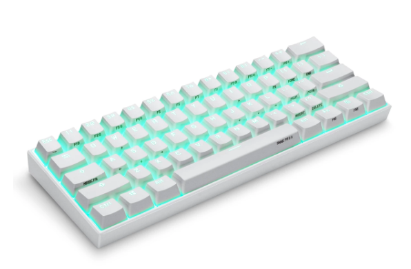
我到手后换了一套 SA 的键帽，感觉没了原厂那种仙气，也不知是不是我拍照的问题
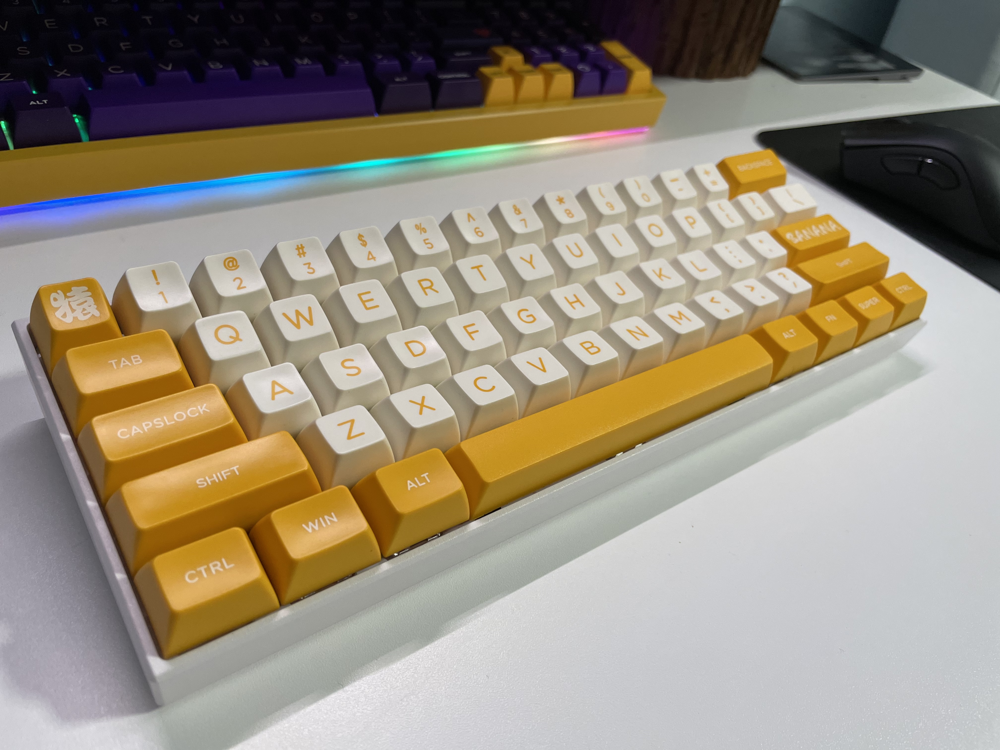
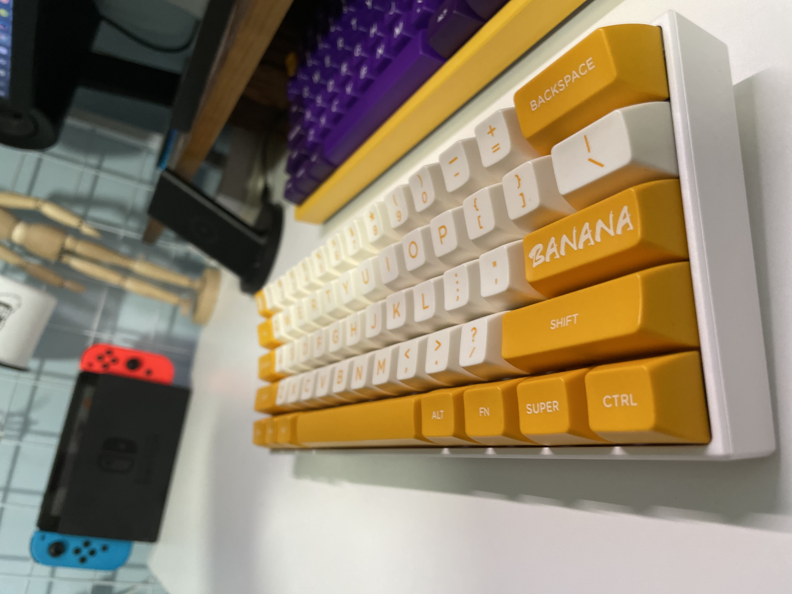
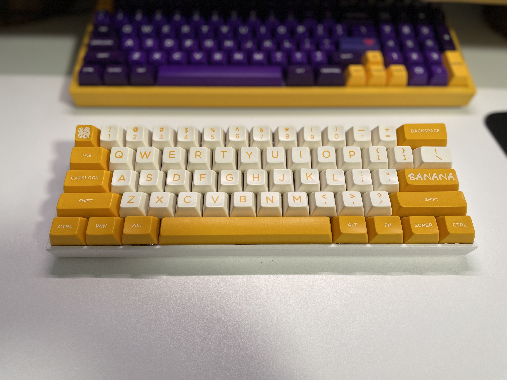
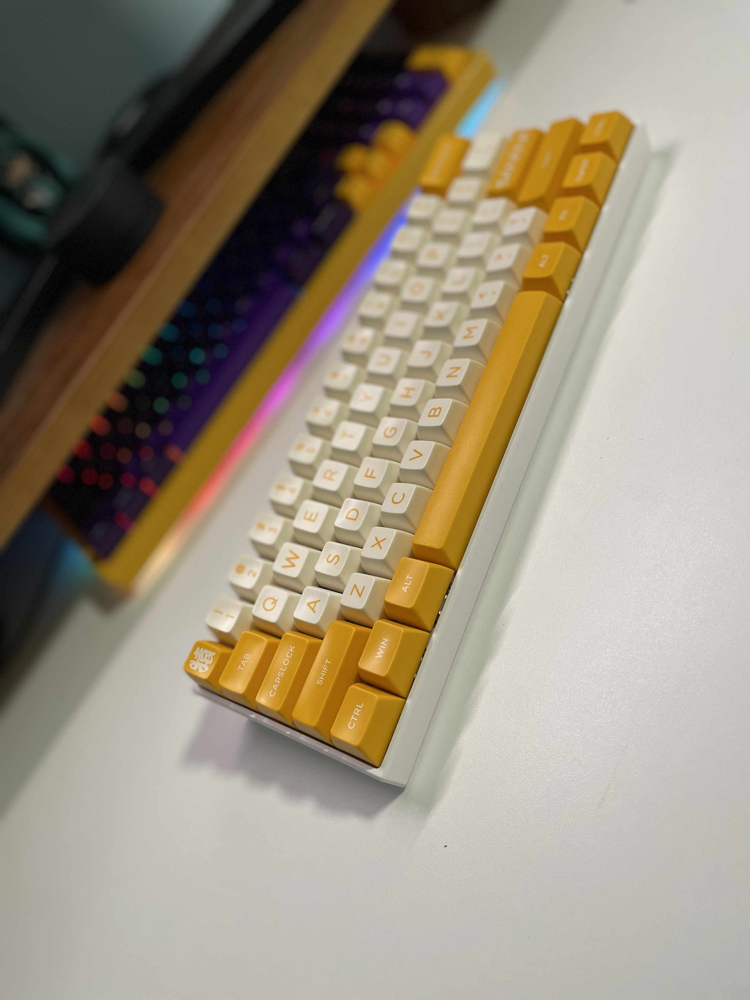
参数
先来看一下官方给出的一些参数吧、不在意的可以直接跳过
| 名称 | 参数 |
|---|---|
| 键盘名称 | Anne Pro2 |
| 有线连接 | TypeC |
| 无线连接 | 蓝牙 5.0 |
| 键盘体积 | 97 * 284 * 49mm |
| 键盘净重 | 635 ± 50g |
| 电池容量 | 1900mAh |
| 光源类型 | LED 贴片 RGB 灯珠 |
| 键帽材质 | PBT 双色注塑键帽 |
| 外壳材质 | ABS |
手感
这把键盘我是想当作主力办工键盘来使用的，考虑到静音和手指疲劳等因素，我最终是选择了佳达隆的 CAP 红轴。
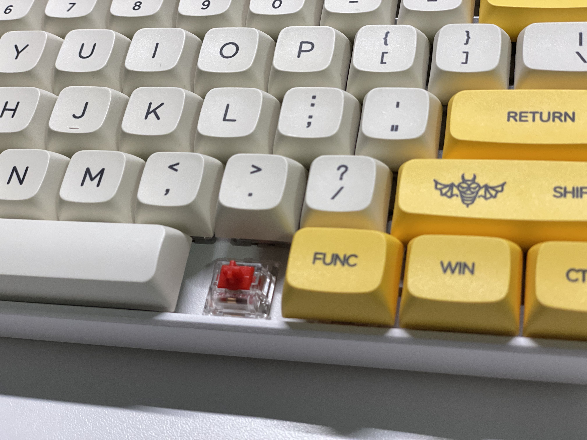
虽然没有脆脆的敲击感，但也不是那种软绵绵的无力感，整体的话还是满意的。
基本上红轴的手感就是“平平淡淡”，不出彩，但是也不会腻，对于办工来说也许最是合适不过。
静音效果的话，肯定是比不上专门的静音轴，但也属于可以将就的情况。
灯光
Anne PRO2 配备了 RGB 的灯珠，可以通过驱动自定义各种等效，如下图
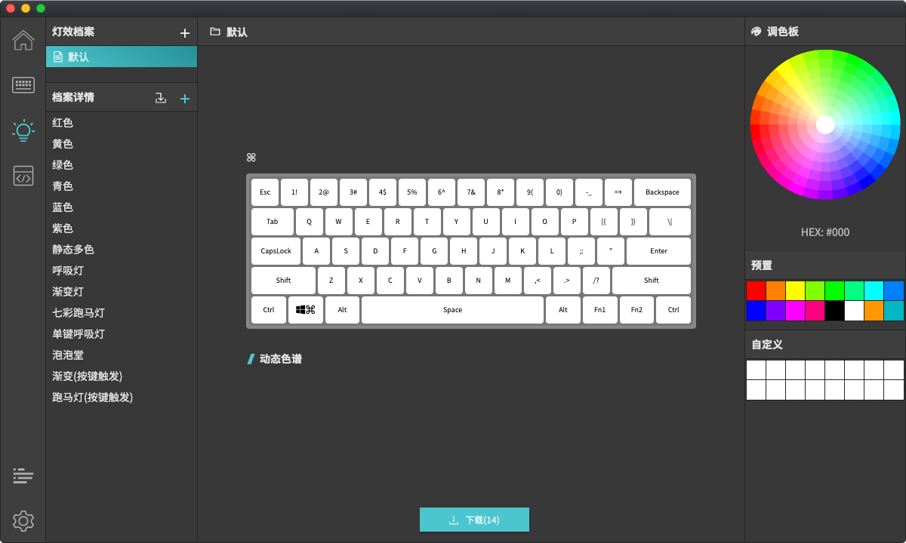
灯光这个我就不多说了，见仁见智，反正官方给了你驱动，不喜欢 RGB 的可以配纯色灯光，不喜欢纯色灯光的也可以主动关闭。
强大的键位功能
终于来到了我势必吹爆了的键位功能定制这一块了，Anne Pro2 对按键的触发类型分为了三种
- 组合按键
- 长按
- 短按
同一个按键，通过设置不同的触发类型可以产生不同的行为。这就使得 Anne Pro2 虽然只有 61 个键位，但完全可以得到全键盘的键位输入功能。
下面我们就来一一体验下 Anne Pro2 强大键位编程功能，分别是
- FN 组合
- Magic FN
- Tap 按键
FN 组合
Anne Pro2 键盘的布局如下，它只有 61 个键位，缺少了 F1~F12、方向键等键位
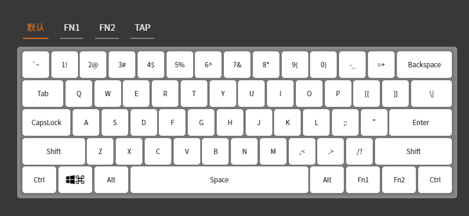
可是在很多场景下那些键位都是必不可少的功能，传统 60% 布局的键盘给出的答案就是使用 FN 组合按键来实现缺失的键位，而这个 Anne Pro2 自然也是支持的。
以下是 Anne Pro2 键盘预定义的 FN1 组合按键
- FN + A = ←
- FN + S = ↓
- FN + D = →
- FN + W =↑
- FN + 1 = F1
- FN + 2 = F2
- ……
更多组合参考下图
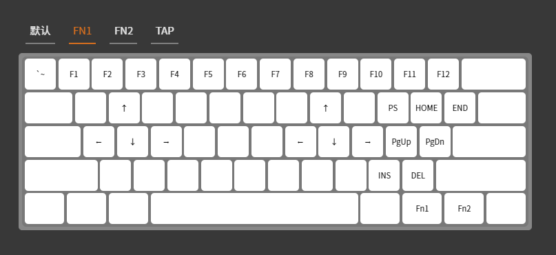
Anne Pro2 有两个 FN 键位，所以 FN2 的组合也可以单独实现不同的功能，比如 Anne 默认就定义 了
- FN2 + 1 切换蓝牙设备1
- FN2 + 2 切换蓝牙设备2
- ……
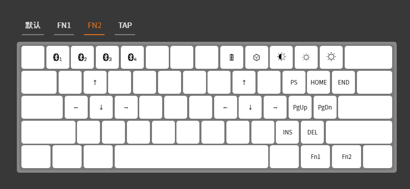
通过 FN 的组合，就使得只有 60% 布局的键盘拥有了全键盘的功能按键。
对了，这些组合按键你都可以通过 Anne Pro2 的驱动进行自定义，如下图
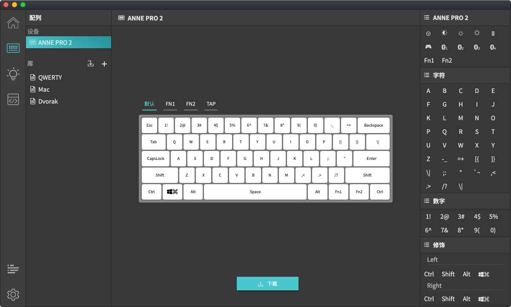
Magic FN
FN1、FN2 的组合使得键位功能不再有缺失，但两个 FN 键都集中在右下角，这就使得某些组合按键按起来会异常吃力，比如我常用到的
- ALT + F10 ⇒ ALT + FN + 0
移动到右下角使得手指脱离了字母区，这对我来说是一个非常糟糕的体验，这其实也是我以前一直不想入手 60% 键盘的原因之一。
对于这样的情况，Anne 给出了一个漂亮的答案，那就是 Magic FN。
可以这样说：FN 的组合使得 Anne 拥有了完整键位的功能，而 Magic FN 则将这个体验上升到了另一个高度。
那么什么是 Magic FN 呢？实际上它就是将 FN 键映射到 Capslock 键的一个功能。
当然 Magic FN 也不仅仅是改个映射而已，它的实现逻辑是这样的（我自己实验推理的，如有不对，恳请指正）
- 如果单独按 Capslock 的话，它仍然是大小写切换键
- 如果你组合 Capslock + 其他键 X
- 如果键 X 配置有 FN 的组合功能，那么就触发组合功能
- 如果没有 FN 组合配置的话，那么就触发 X 键原有的功能
如下图所示，启用 Magic FN 以后，我完全不用离开字母区就能获得方向键的功能，只需要左手小拇指按住 Capslock，右手操作 I、J、K、L 就行。
为了方便，我甚至把 FN + Enter 也改成了 Backspace，这样删除功能也可以更便捷了。
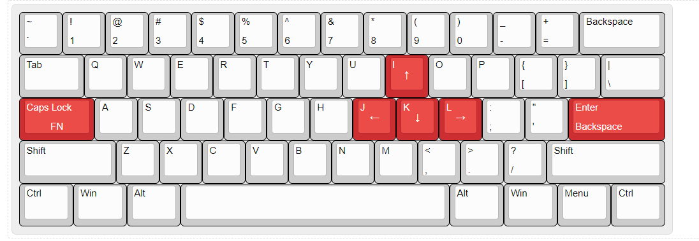
对了，如果要启用 Magic FN 的话，目前只能通过软件驱动来启用，启用完成以后就不再需要它了（即功能的运行不依赖软件）。
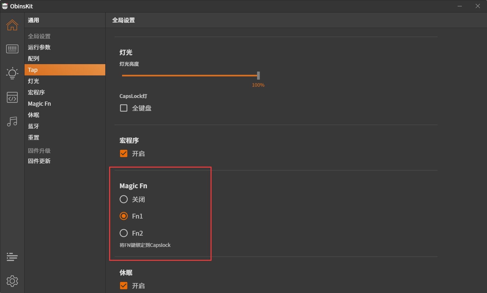
Tap
除了 Magic FN 以外，Anne Pro2 另一个创新就是 Tap 功能。
Tap 英文释义中作动词是轻敲，故可以联想到该功能与键位的长按、短按有关。
实际上的确是这样的，Tap 功能可以使得一个键位在短按和长按可以产生两种不同的行为。
比如 Anne 就默认通过 Tap 将右下角的四个键位编程了方向键，短按就是上下左右，长按就是原生键位（见下图黄色区）。
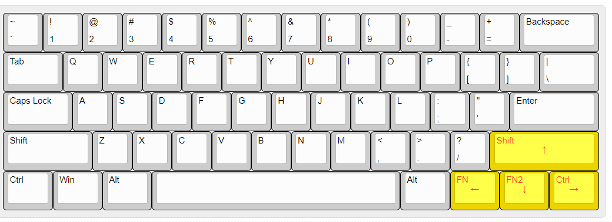
当然，使用者也可以通过 Anne 的驱动还可以设置长按和短按的临界点，默认是以 300ms 作为临界点的。
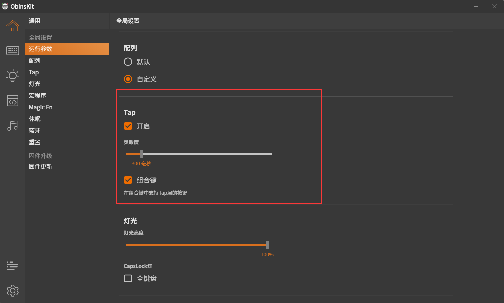
我通过这个 Tap 键自定义了 ESC 按键（见下图红色区）
- 长按是 ESC
- 短按是 `
- SHIFT+短按是 ~
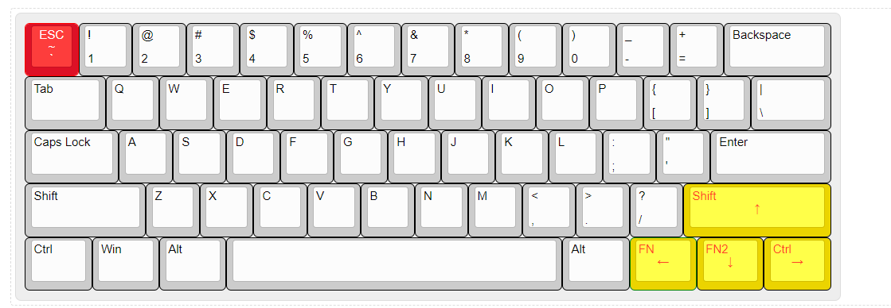
未来的一些期待
目前为止这块键盘的功能我是非常满意的，但是综合自己的使用体验，我觉得有些地方还是可以做到更好的。
首先就是很多配置一定需要通过 USB 连接电脑使用软件才能更改，这在很多时候不是很方便（虽然配置好了以后就不用再依赖驱动了）。
比如 Magic FN、MAC/Windows 布局切换这种功能可以预定义在硬件层，使用类似于 poker 的 DIP 切换方式？
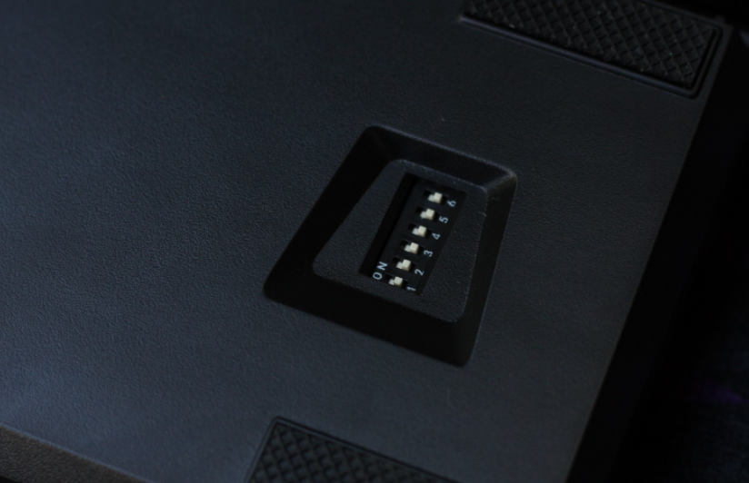
然后就是蓝牙和有线模式的切换，这个切换按钮在键盘的底部，这就导致每次切换都得把键盘拿起来翻转一遍。
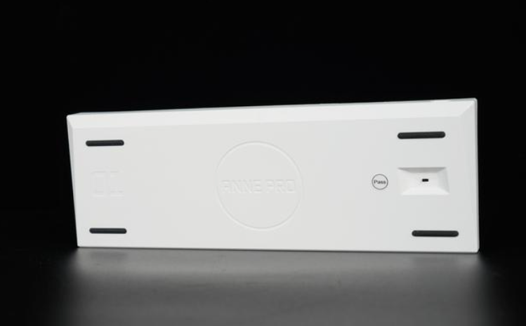
这个切按钮要是能设置在键盘背侧或左右侧就好了，或者支持通过键位组合切换也行。
再一个就是轴体不支持热插拔了，比如我买这块键盘是为了办工使用，所以我对静音是有一定的要求的，我个人期望是 TTC 的静音红轴 V3，但是官方没有这样轴体，本身键盘又不支持热插拔……
虽然焊锡也是一条路子，不过并不适合我这样的手残党。
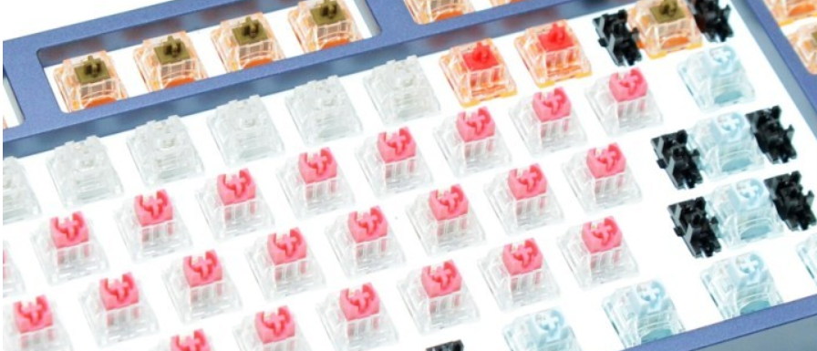
总结
总的来说，我对 Anne Pro2 是非常满意的，尤其是在这个价位能有这么良心的体验，说明厂家确实是在从用户的角度在思考和创新，实属难得，愿厂家越做越好。